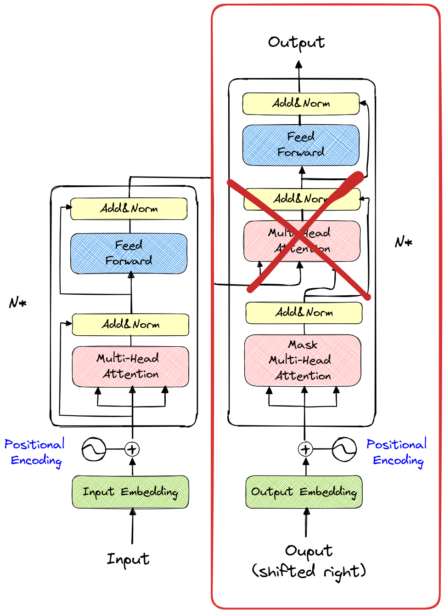

Architecture et particularités du transformer#
Jusqu’à présent, nous avons étudié l’architecture du décodeur du transformer, en nous concentrant uniquement sur la masked multi-head self-attention. Dans cette partie, nous allons explorer l’intuition derrière le bloc encodeur et la multi-head cross-attention.
Particularité du texte#
Avant d’aborder le bloc encodeur, il est important de comprendre pourquoi nous n’avions besoin que du bloc décodeur dans les notebooks précédents. Dans la figure suivante, l’encadré rouge montre la partie du modèle que nous avons utilisée (sans la seconde multi-head attention).

Le texte se lit de gauche à droite, ce qui explique pourquoi un modèle générant du texte utilise cette même direction pour traiter les informations. C’est ce qu’on appelle un modèle autoregressif. Le modèle prédit le token suivant en se basant sur les tokens précédents (inclus dans le contexte).
Pendant l’entraînement, un masque est utilisé pour éviter que le modèle ne “voie” les tokens situés après le token actuel.
Cependant, cette approche n’est optimale que pour la génération de texte de gauche à droite. Il existe de nombreux cas où l’approche autoregressive n’est pas la meilleure. Parmi ces cas, on trouve certaines applications de NLP comme la traduction ou l’analyse des émotions, ainsi que des approches en vision par ordinateur. Actuellement, l’architecture du transformer a fait ses preuves dans la majorité des domaines utilisant le deep learning, et dans de nombreux cas, il ne s’agit pas d’une approche autoregressive.

AR-LLM signifie auto regressive large language model.
Le bloc encodeur#
Le bloc encodeur est le bloc de gauche représenté sur la figure de l’architecture (encadré en rouge à nouveau).

La seule différence avec le bloc utilisé précédemment est que la couche multi-head attention n’est pas masquée. Pour faire l’analogie avec les notebooks précédents, cela signifie qu’on utilise une matrice complète au lieu d’une matrice triangulaire inférieure pour le calcul de l’attention.
En pratique, cela signifie que chaque token de la séquence d’entrée peut interagir avec tous les autres tokens (situés avant ou après). Dans des cas comme l’analyse de sentiments, c’est l’approche privilégiée car on a une séquence connue en entrée et on cherche à prédire un label (positif, négatif ou neutre).
Point sur l’analyse de sentiments : En NLP, l’analyse de sentiments consiste à donner au modèle un texte et lui demander de ressortir le sentiment associé à ce texte. Par exemple, pour une critique de film, on veut que le modèle prédise négatif pour la critique “Ce film est un vrai navet” et positif pour la critique “Pour moi, c’est le meilleur film de tous les temps”.
Point important à considérer : Pour prédire le sentiment associé à une phrase, on a besoin de ne passer qu’une seule fois dans le transformer. Pour la génération de texte, on doit faire appel au modèle après chaque token généré (donc on passe 10 fois dans le modèle pour générer 10 tokens).
Les modèles transformer basés uniquement sur le bloc encodeur ont de nombreuses utilisations en plus de la détection de sentiments : détection de spam, classification de documents, extraction d’entités nommées et recommandation de contenu. Nous verrons aussi que pour le traitement d’images, on utilise une variante du transformer pouvant s’apparenter à un encodeur. Pour résumer, on pourrait dire que le bloc encoder est adapté aux tâches de classification (détection et segmentation également pour les images).
Architecture complète avec cross-attention#
Il nous reste à comprendre l’utilité de l’architecture complète. Pour rappel, l’article “Attention Is All You Need” qui introduit le transformer est un article de traduction automatique.
Analysons le problème de traduction avant de comprendre le fonctionnement de l’architecture. En traduction, on dispose d’un texte dans une langue et on veut générer le même texte dans une autre langue. On a donc, d’une part, une partie génération (donc décodeur) et, d’autre part, une partie d’encodage de l’information disponible.
Il faut imaginer que la partie décodeur qui génère les tokens le fait en se basant à la fois sur les tokens générés précédemment et en interrogeant la partie encodée via la couche de cross-attention.
Formalisation mathématique#
L’encoder du transformer prend en entrée la séquence source \(x\) et produit une représentation contextuelle pour chaque token de cette séquence : \(E = \text{Encoder}(x)\) Ici, \(E\) est une matrice de représentations contextuelles pour la séquence source \(x\). Chaque ligne de \(E\) correspond à une représentation contextuelle \(e_i\) pour le token \(x_i\).
Le decoder du transformer prend en entrée les représentations contextuelles \(E\) de l’encoder et génère la séquence cible \(y\). À chaque étape de génération, le decoder produit un token \(y_t\) en se basant sur les tokens générés précédemment et en interrogeant l’encoder via la couche de cross-attention : \(y_t = \text{Decoder}(y_{<t}, E) \) Ici, \(y_{<t}\) représente les tokens générés précédemment jusqu’à l’étape \(t-1\). Le processus de génération utilise à la fois le self-attention (pour capturer les dépendances séquentielles dans la séquence cible) et la cross-attention (pour incorporer des informations de l’encoder \(E\)).
La cross-attention permet au decoder de consulter les représentations contextuelles \(E\) de l’encoder pour obtenir des informations pertinentes lors de la génération de chaque token \(y_t\). Elle est calculée comme : \( \text{Cross-Attention}(Q, K, V) = \text{softmax}\left(\frac{QK^T}{\sqrt{d_k}}\right) V \) où \(Q\) (query) sont les embeddings des tokens générés précédemment par le decoder, \(K\) (key) et \(V\) (value) sont les embeddings de l’encoder \(E\), et \(d_k\) est la dimension des embeddings \(K\) pour la normalisation.
En combinant ces éléments, le modèle transformer peut efficacement traduire une séquence de tokens d’une langue source à une langue cible en utilisant des mécanismes d’attention et des positionnal embeddings pour maintenir l’ordre séquentiel et capturer les dépendances à long terme.
Notes : Le modèle décodeur essaie de générer un token pertinent en fonction des tokens de l’encodeur. Il va émettre une requête (query) et regarder les clés (key) et valeurs (value) transmises par l’encodeur via la couche de cross-attention. Dans un deuxième temps, il va émettre une requête, une clé et une valeur pour trouver un token cohérent par rapport aux tokens qu’il a générés précédemment via la couche de self-attention.
Exemples d’utilisation#
L’architecture complète est utilisée dans des cas où l’on cherche à générer un texte à partir d’un autre texte. Les applications les plus courantes sont : la traduction, le résumé de texte, la correction automatique et la génération de texte guidée.
Notes : Vous avez sans doute constaté que ChatGPT est capable de faire de la traduction et du résumé de texte. En effet, le modèle est tellement puissant qu’il arrive à réaliser des tâches qui sont en théorie difficiles pour lui. Il est entraîné à prédire le prochain token et en y réfléchissant un peu, on peut facilement imaginer que la tâche de prédiction du prochain token permette de réaliser toutes les tâches de NLP. Cependant, pour des modèles plus restreints, il vaut mieux s’en tenir à une architecture adaptée à notre problème.